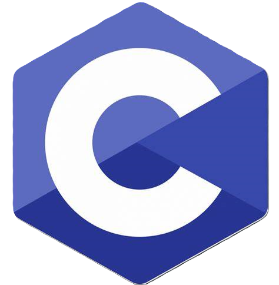
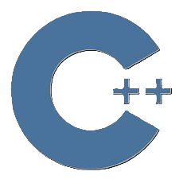
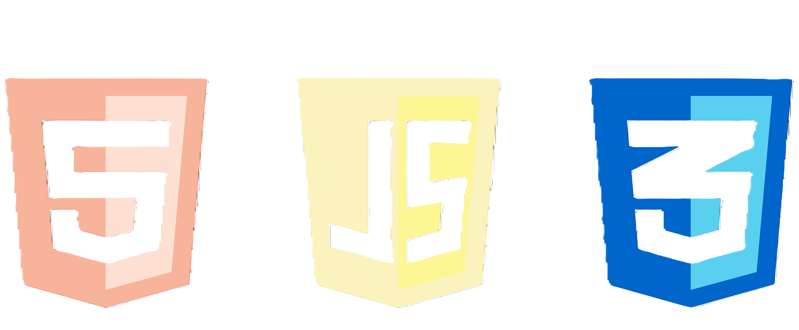
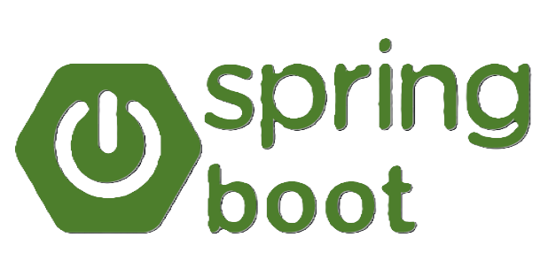
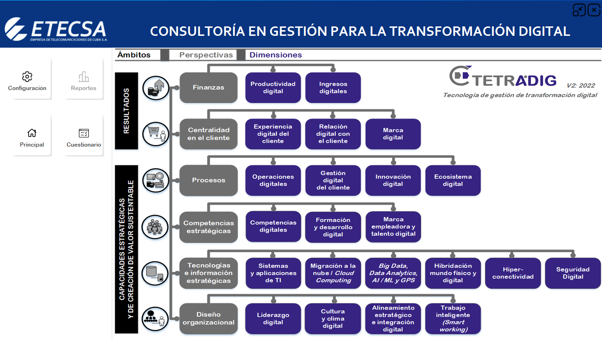

Hi, this is Abdiel Rodríguez Lara.He is a 3rd year Computer Engineering student at Centro Universitario Jose Antonio Echeverria(CUJAE) with a solid foundation in programming and a passionate interest in the development of business applications and websites. His experience in object-oriented programming, frontend and backend development, and relational database management makes him a complete developer.

C
C++
JAVA
HTML/CSS/JS
SPRING BOOT GITHUB
GITHUB
He entered the Centro Universitario Jose Antionio Echeverria(CUJAE) in 2022 in the specialty of Computer Engineering. Since then he has developed satisfactory in diferent subjects, currently maintaining an average of 4.3/5. His graduation is scheduled for 2026. Below you cann study examples of school prpjects and their associated subjects:
The subject of PostgreSQL Databases at CUJAE focuses on the study and management of database management systems using PostgreSQL, covering fundamental concepts such as schema design, normalization and optimization. Students learn how to develop skills to solve real problems in data management through hands-on projects.
The Data Structure subject in the Computer Engineering program at CUJAE focuses on the study and implementation of various data structures, such as lists, stacks, queues, trees, and graphs, along with the algorithms necessary for their management. The course combines theory and practice, highlighting the importance of selecting the right structure to optimize program performance and analyzing the temporal and spatial complexity of algorithms. Through exercises and projects, students acquire essential skills to design efficient solutions in the field of computer science.
Developed a management system for an animal shelter together with 3 other colleagues,
where the use of relational databases, object-oriented programming and extensive use of complex graphical interfaces
are seen. Link to GitHub:
He also has extensive knowledge of data structures, which is a crucial aspect of computer science and
software development. This project exemplifies the implementation of a BTree, a type of self-balancing tree
data structure that maintains sorted data and allows for efficient insertion, deletion,
and search operations. The BTree is particularly well-suited for systems that read and write
large blocks of data, such as databases and file systems.
Link to GitHub
Developed a demo of a project for the telephone agency in Cuba, ETECSA, which is in development and was presented at an international fair on November 4th,2024. T his project consists of a digital maturity test aimed at companies. When answering various questions, various calculations are made to obtain results to be shown in tables and graphs for better understanding. Link to GitHub.
